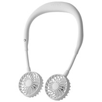
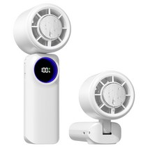
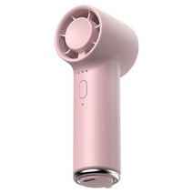
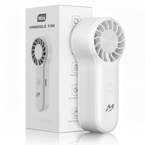
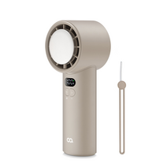

휴대용 미니 선풍기 추천 2026 — 목걸이·핸디·BLDC 5가지 완전 비교
작년 7월, 신도림 환승통로에서 12분을 걸었습니다. 셔츠가 등에 달라붙을 정도였고 그때 옆에서 목걸이 선풍기를 걸고 가는 분을 보면서 바로 검색창을 열었어요. 그날 밤 9,900원짜리를 주문했고, 이후 세 종류를 바꿔가며 써봤습니다.
결론부터 말하면 목걸이형·핸디형·BLDC 모터형은 쓰임새가 완전히 다릅니다. 어느 상황에 쓰는지를 먼저 정해야 돈을 안 날립니다. 이번 글에서는 2026년 5월 19일 기준 쿠팡 구매 가능한 5가지 제품을 타입별로 나눠 어느 상황에 뭘 사야 하는지 명확하게 정리해드리겠습니다.
5초 요약 — 용도별 미니 선풍기 추천
복잡한 거 다 빼고 용도별로 정리하면 이렇게 나옵니다.
| 용도 | 추천 모델 | 가격 |
|---|---|---|
| 출퇴근 양손 자유 (넥밴드) | 블루아이디 무선 넥밴드 140g | 29,800원 |
| 강풍·빠른 냉각 핸디형 | PERFFIER 급속 냉각 손선풍기 | 21,800원 |
| 책상·가방 초소형 BLDC | 무쿠 BLDC 초소형 3단 | 9,900원 |
| 가성비 입문형 초미니 | 맨큐 초미니 무선 손선풍기 | 9,900원 |
| 100단 정밀 온도조절 | 오아 아이스볼트맥스 100단 | 29,800원 |
이 표만 보고 가셔도 됩니다. 더 자세한 근거가 궁금하시면 아래로 내려가세요.
목걸이형 vs 핸디형, 실제로 어떻게 다를까요
휴대용 선풍기를 처음 사는 분들이 가장 헷갈리는 부분이에요. 두 타입은 사용 상황이 완전히 다릅니다.
목걸이(넥밴드)형 선풍기
목에 걸고 다니면서 양손이 자유로운 타입이에요.
- 지하철·버스·보행 중에도 양손을 다른 일에 쓸 수 있습니다
- 풍속이 핸디형보다 약하지만 장시간 연속 사용에 적합
- 무게 100~200g 수준으로 목에 걸어도 부담이 적음
- 출퇴근·등하교·쇼핑처럼 이동하면서 사용할 때 최적
- 대부분 USB-C 충전, 8~15시간 배터리
핸디형 선풍기
손에 쥐고 사용하는 일반적인 미니 선풍기 타입이에요.
- 풍속이 강해서 단시간 집중 냉각에 효과적입니다
- 책상 위에 세워서 탁상형으로도 사용 가능한 제품이 많음
- 배터리 용량 대비 강한 바람이 나와서 야외 작업이나 스포츠에 유리
- 무게 80~150g 수준으로 가볍게 들고 다닐 수 있음
어떤 걸 골라야 하나요? 이동 중 양손이 필요하거나 장시간 사용한다면 목걸이형, 책상에서 집중적으로 쓰거나 강한 바람이 필요하다면 핸디형이 맞습니다.
BLDC 모터가 일반 모터와 다른 이유
BLDC(Brushless DC) 모터는 쉽게 말해 브러시(전기 접점)가 없는 모터예요. 일반 선풍기 모터보다 다음 세 가지가 뛰어납니다.
- 소음이 훨씬 적습니다: 브러시 마찰이 없어서 조용한 사무실에서도 쓸 수 있음
- 배터리 효율이 높습니다: 같은 배터리로 더 오래 작동
- 수명이 길어집니다: 마모 부품이 없어서 장기 사용에도 성능 저하 적음
단점은 제조 비용이 높아서 가격이 다소 올라간다는 것. 조용한 환경(사무실, 도서관)에서 쓴다면 BLDC가 확실히 가치 있습니다.
미니 선풍기 선택 가이드 — 구매 전 확인할 3가지
1. 주 사용 상황: 이동 중인가, 고정 사용인가
| 사용 상황 | 추천 타입 |
|---|---|
| 출퇴근·등하교 이동 중 | 목걸이(넥밴드)형 |
| 책상·야외 고정 사용 | 핸디형 (탁상 겸용) |
| 도서관·사무실 조용한 공간 | BLDC 모터형 |
| 캠핑·스포츠 강한 바람 | 핸디형 고풍속 모델 |
2. 배터리 사용 시간
대부분의 가성비 미니 선풍기는 약풍 기준 8~15시간 배터리를 제공합니다. 강풍으로 사용하면 2~4시간으로 줄어드는 경우가 많아요.
- 하루 출퇴근(2~3시간) 사용이라면 5,000mAh 이상이면 충분
- 종일 사용이 필요하다면 7,000mAh 이상이나 보조 배터리 병용 고려
- 대부분 USB-C 충전 지원, 보조 배터리로 충전 가능
3. 무게와 크기
- 목걸이형: 100~200g이면 목에 걸어도 피로감이 적음. 140g 이하 권장
- 핸디형: 80~120g이면 장시간 들고 다니기 편함
- 여름 가방에 넣고 다닐 예정이라면 지름 10cm 이하 제품이 좋음
미니 선풍기 추천 5가지
1위 — 블루아이디 무선 넥밴드 휴대용 목 선풍기 140g

29,800원 38,900원 (23% 할인)
출퇴근 양손 자유가 필요한 분들께 1순위로 추천합니다. 무게가 140g으로 목에 걸어도 무겁지 않고, 좌우 각도 조절이 가능해서 바람이 얼굴로 정확히 오도록 세팅할 수 있어요.
이런 분께 추천합니다
- 지하철·버스 출퇴근 중 핸드폰 사용하면서 시원하게 있고 싶은 분
- 장시간 야외 행사·쇼핑몰에서 이동하면서 쓸 분
- 양손을 쓰는 일(요리·정리)을 하면서 시원하고 싶은 분
아쉬운 점: 핸디형보다 풍속이 약해서 강한 바람이 필요한 분께는 부족할 수 있습니다.
쿠팡에서 보기2위 — PERFFIER 가성비 급속 냉각 휴대용 미니 무선 손선풍기

21,800원 49,800원 (63% 할인)
63% 할인으로 2만 원대에 급속 냉각 기능을 제공하는 핸디형 선풍기예요. 강한 바람과 빠른 냉각이 필요한 분, 가성비를 최우선으로 생각하는 분께 잘 맞습니다.
이런 분께 추천합니다
- 캠핑·야외 운동 등 강한 바람이 필요한 분
- 예산이 한정되어 있지만 성능은 포기하고 싶지 않은 분
- 처음 손선풍기를 사보는 분
아쉬운 점: 손에 들고 사용해야 해서 장시간 이동 시에는 목걸이형보다 불편합니다.
쿠팡에서 보기3위 — 무쿠 BLDC 초소형 3단 미니 손 휴대용 선풍기 (파우더리)

9,900원 33,000원 (70% 할인)
9,900원에 BLDC 모터를 쓴다는 게 놀라운 제품이에요. 조용한 사무실이나 도서관에서 써야 하는데 예산이 빠듯한 분께 적극 추천합니다. 파우더리 컬러로 디자인도 깔끔합니다.
이런 분께 추천합니다
- 도서관·독서실·사무실처럼 조용한 공간에서 쓸 분
- 소음이 예민해서 일반 선풍기가 거슬리는 분
- 1만 원 이하 가성비 BLDC 선풍기를 원하는 분
아쉬운 점: 초소형이라 풍량이 크지 않아 강한 바람을 원하는 분께는 아쉽습니다.
쿠팡에서 보기4위 — 맨큐 초미니 휴대용 선풍기 무선 손선풍기 대용량

9,900원 29,900원 (83% 할인)
83% 할인으로 1만 원 이하에 대용량 배터리를 갖춘 초미니 선풍기예요. 처음 미니 선풍기를 써보는 분, 자녀에게 저렴하게 하나 사줄 분께 잘 맞습니다.
이런 분께 추천합니다
- 미니 선풍기를 처음 사보는 입문자
- 학생·어린이용으로 저렴하게 장만하고 싶은 분
- 보조 선풍기로 하나 더 마련하고 싶은 분
아쉬운 점: BLDC 모터가 아니라 소음이 다소 있을 수 있어 조용한 공간보다는 야외·이동용에 더 적합합니다.
쿠팡에서 보기5위 — 오아 아이스볼트맥스 100단 미니 급속 냉각 핸디 휴대용

29,800원 37,900원 (21% 할인)
100단계 풍속 조절이 가능한 프리미엄 핸디 선풍기예요. 자신에게 딱 맞는 바람 세기를 정밀하게 조절하고 싶은 분, 급속 냉각 기능과 세밀한 컨트롤 둘 다 원하는 분께 추천합니다.
이런 분께 추천합니다
- 바람 세기를 세밀하게 조절하고 싶은 분
- 급속 냉각 기능이 필요한 분
- 오아 브랜드의 완성도 높은 선풍기를 원하는 분
아쉬운 점: 100단 조절 기능으로 가격이 다소 높으며, 단순한 사용을 원하는 분께는 과한 기능일 수 있습니다.
쿠팡에서 보기미니 선풍기 FAQ
Q. 미니 선풍기 배터리는 얼마나 가나요?
약풍 기준으로 대부분 8~15시간 사용이 가능합니다. 강풍으로 사용하면 2~4시간으로 크게 줄어들어요. 하루 출퇴근(2~3시간 사용) 기준이라면 대부분의 제품으로 충분하고, 하루 종일 야외 활동이라면 보조 배터리를 함께 챙기는 것이 좋습니다. USB-C 충전이 지원되는 제품은 보조 배터리로 충전하면서 동시에 사용할 수 있어서 편리합니다.
Q. USB-C 충전 제품인지 어떻게 확인하나요?
최근 출시되는 미니 선풍기 대부분은 USB-C 충전 방식을 채택하고 있습니다. 구매 전 상품 상세 페이지에서 "USB-C", "C타입" 표시를 확인하세요. 본문에서 소개한 5개 제품은 모두 무선 충전 방식을 지원합니다. 마이크로 5핀 충전 방식은 구형 모델에 많으며, 편의성 면에서 USB-C가 더 낫습니다.
Q. 비행기에 들고 탈 수 있나요?
내장 배터리 용량이 100Wh(약 27,000mAh) 이하면 기내 반입이 가능합니다. 일반 미니 선풍기의 배터리는 대부분 2,000~10,000mAh 수준이라 해당 기준을 충분히 만족합니다. 단, 항공사마다 정책이 다를 수 있으니 탑승 전 소속 항공사 기내 반입 규정을 한 번 확인하시는 걸 권장합니다.
Q. 어린 아이도 안전하게 사용할 수 있나요?
미니 선풍기 날개는 회전 속도가 빠르기 때문에 3세 미만 영유아에게는 사용하지 않도록 권장합니다. KC 안전인증 마크가 있는 제품을 선택하면 기본적인 안전 기준을 통과한 제품입니다. 아이가 손가락을 넣지 않도록 주의하고, 사용 중에는 보호자가 함께 있는 것이 좋습니다. 날개 보호 케이지가 촘촘한 제품이 어린이 사용에 더 안전합니다.
결론 — 여름 출퇴근 더위, 타입 맞게 고르면 끝
세 번 바꿔 쓴 경험에서 내린 결론은 하나입니다. 타입을 잘못 고르면 아무리 좋은 제품도 가방 속에 방치됩니다. 상황별 선택 기준입니다.
- 이동하면서 양손 자유가 필요하다 → 블루아이디 넥밴드 (29,800원)
- 강한 바람으로 빠르게 식히고 싶다 → PERFFIER 핸디형 (21,800원, 63% 할인)
- 조용한 공간에서 소음 없이 쓰고 싶다 → 무쿠 BLDC (9,900원)
- 가성비 입문, 처음 써보는 분 → 맨큐 초미니 (9,900원, 83% 할인)
- 100단계 세밀 조절, 급속 냉각 둘 다 → 오아 아이스볼트맥스 (29,800원)
예산이 넉넉하다면 목걸이형 하나 + 책상용 BLDC 하나 조합이 가장 만족도가 높습니다. 둘 다 합쳐도 4만 원이 안 됩니다. 올여름 지하철 환승통로에서 다른 분들이 당신 선풍기를 부러워할 차례입니다.
관련 글: 선풍기 vs 서큘레이터 차이 — 어느 쪽이 더 시원할까?
이 포스팅은 쿠팡 파트너스 활동의 일환으로, 이에 따른 일정액의 수수료를 제공받습니다. 소비자에게 추가 비용이 발생하지 않습니다.